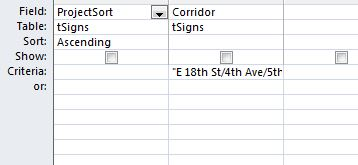
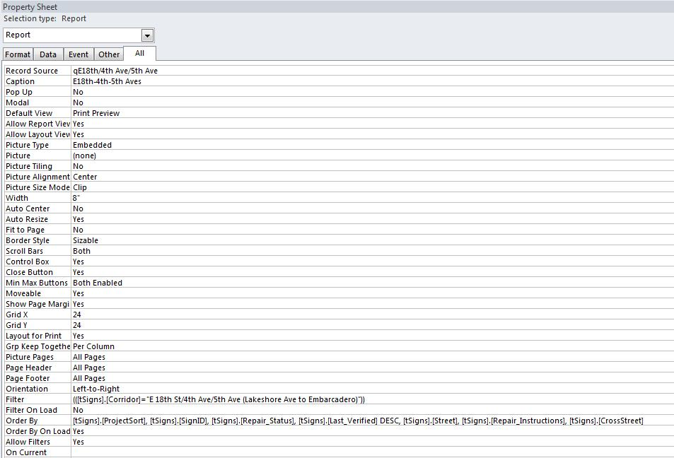

This is an overview of the sign plan work order, the final component of the sign plan process. Each attachment is described with instructions on how to create it.
After generating all relevant attachments, assemble the various components of the work order into a single pdf using Adobe Acrobat.
Cover Sheet:
- Open the work order template (located:\\PWAFILE2\Transportation\Bike-Ped_Program\Projects\Bikeways-signage\5-Corridors\1-Corridor-Development_General\work-orders\work-order-overview-template.xls ). Save a copy with an updated filename to the project folder.
- The first worksheet either 'Quantities-contractor' or 'Quantities-city-crews' is the cover sheet
- To obtain the values for 'installation quantities by sign type' you will generate a report in Access.
- Open the report 'r1TEMPLATE_Quantities' in Design View and change the report’s record source to the query you generated for the field review. Switch to Print Preview and use the sign assembly quantities listed to fill in the values of 'installation quantities by sign type'
- QUANTITIES NOTES:
- Only new signs (Wayfinding, turn, regulatory, warning) are to be counted in this report.
- If there are existing signs that are part of another project & will be used in the current project, only count the signs that will be added to the assembly.
- If the existing assembly is to remain unaltered, do not count it.If any of the destinations supported along the route require two lines of text, some of the D1-1bs will have atypical dimensions. These signs should be called out on the cover sheet; see the Fruitvale Ave work order for an example. To determine which destinations require two lines of text, consult the wayfinding signage design guidelines.
- On the cover sheet, delete sign types that have quantity=0. Also, delete attachments from the listing that will not be included with the work order.
- Export the cover sheet to pdf
Attachment A: Installation locations/descriptions
- Attachment A is a report generated in Access that lists each sign's location, messaging, and installation notes. It is based on a query that captures all of the corridor locations.
- Open the report “r1TEMPLATE_WorkOrder” in the WayfindingSigns Access database in" DesignView." Similar to the field review report process, change the report’s record source (query and corridor name) to the correct bikeway corridor. Name and save the report (replace “TEMPLATE” with the corridor name). The syntax is very fussy! For the query, see

- For the report, see below. Example Filter syntax fo the Foothill/Bancroft corridor is (([tSigns].[Corridor]="Foothill/Bancroft from Lakeshore Ave to San Leandro")). Example Order By syntax is
- [tSigns].[ProjectSort], [tSigns].[SignID], [tSigns].[Repair_Status], [tSigns].[Last_Verified] DESC, [tSigns].[Street], [tSigns].[Repair_Instructions], [tSigns].[CrossStreet]

- View and print the report; export to pdf only when finalized (or requested).
Attachment B: Sign Messages
- Attachment B is a word document for the sign printers listing the sign messages. This document is a report generated in Access.
- Open the report “r1TEMPLATE_SignMsgsforExportv2" in Design View and change the report’s record source to the correct bikeway corridor.
- Return to Print Preview and select “Publish it with Microsoft Office Word” from the toolbar.
- Save the document to the project folder. It will be submitted digitally.
- Name the file 2b-[corridor name]-sign-messages
Attachment C: Signage Plan Map
Attachment D: Sign Removal Locations
- This attachment is the 'Removal' work sheet of the project's work-order-overview excel workbook.
- Fill in the template with signs slated for removal.
- Export the removal list as a pdf
Attachment E: Typical Sign Details
- This attachment is the Typical Bikeway Signage Assemblies and Mounting Configuration. It is a standard attachment
- Attachment E is located at:
\\oakland\pwa\Transportation\Bike-Ped_Program\Projects\Bikeways-signage\1-resources\work-orders-general\work-order-attachments\Attach-E-bike-signage-assemblies_revMarch11.pdf
Attachment F: Custom Sign Layouts
- If there is a non-standard sign design for the corridor, Jennifer creates a detailed layout to be submitted.
Compile Work Order
- After all components of the work order are created and approved, create one pdf that includes all attachments
- Save the pdf in the corridor folder and name the file 2a-[corridor name]-work-order